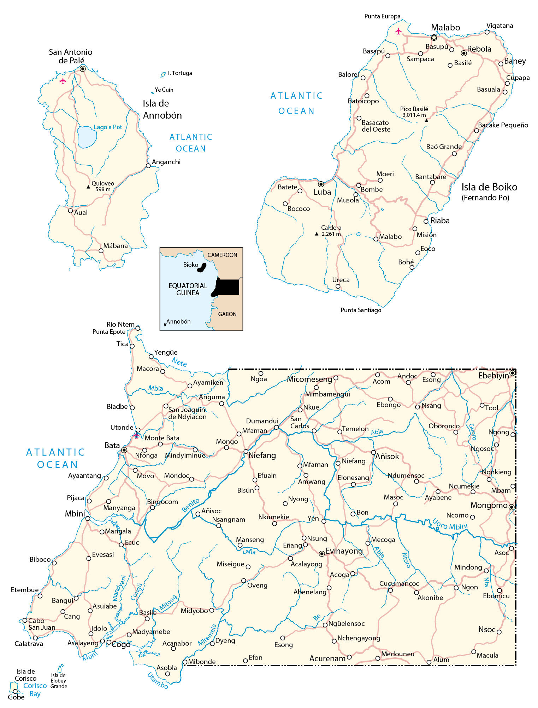

Equatorial Guinea is a small country located in Central Africa. It borders 2 other countries including Cameroon to the north, and Gabon which wraps around from the south to the east. Also, it shares 296 kilometers (184 mi) with the Gulf of Guinea in the Atlantic Ocean to the west. Equatorial Guinea consists of its mainland on the coast of Central Africa.
Go back home it also contains 5 islands in the Atlantic Ocean, including Bioko Island which is home to its capital city of Malabo. Bata is the largest city, situated on the west coast of the mainland known for being a port city. The population is about 1.3 million people and has one of the worst human rights records in the world.